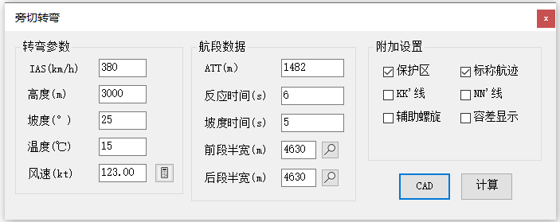
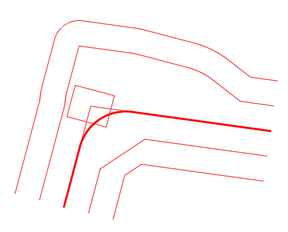

功能简介
【旁切转弯】用于绘制 PBN 旁切转弯（Fly By）保护区。航空器在转弯点之前的一定距离开始转弯，从转弯点侧方经过后，切入下一航段，这种转弯方式称为旁切转弯。本窗口按转弯参数与航段数据生成旁切转弯保护区，并可绘制 NN′（最早下降线）、KK′（最早转弯线） 线以及转弯标称航迹。
界面预览

界面元素
| 分区 / 控件 | 说明 |
|---|---|
| 转弯参数 | 指示空速、高度、坡度、风速等转弯参数。 |
| 航段数据 | 前后航段的航迹、宽度等数据。 |
| 附加设置 | 其它绘制选项。 |
| NN′线 / KK′线（复选框） | 是否绘制 NN′、KK′ 辅助线。 |
| 计算（按钮） | 计算转弯参数并输出到命令窗口。 |
| CAD（按钮） | 将旁切转弯保护区绘制到 CAD 窗口中。 |
操作步骤
- 命令行输入
Y51_FlyBy打开窗口。 - 填写“转弯参数”与“航段数据”。
- 点击【计算】，按需勾选【NN′线】【KK′线】。
- 点击【CAD】，按提示依次指定转弯起点、转弯点、转弯终点，绘制旁切转弯保护区。
提示：本软件在计算旁切转弯保护区时，若前后航段的宽度不同时，通过风螺旋进行衔接。
应用案例
